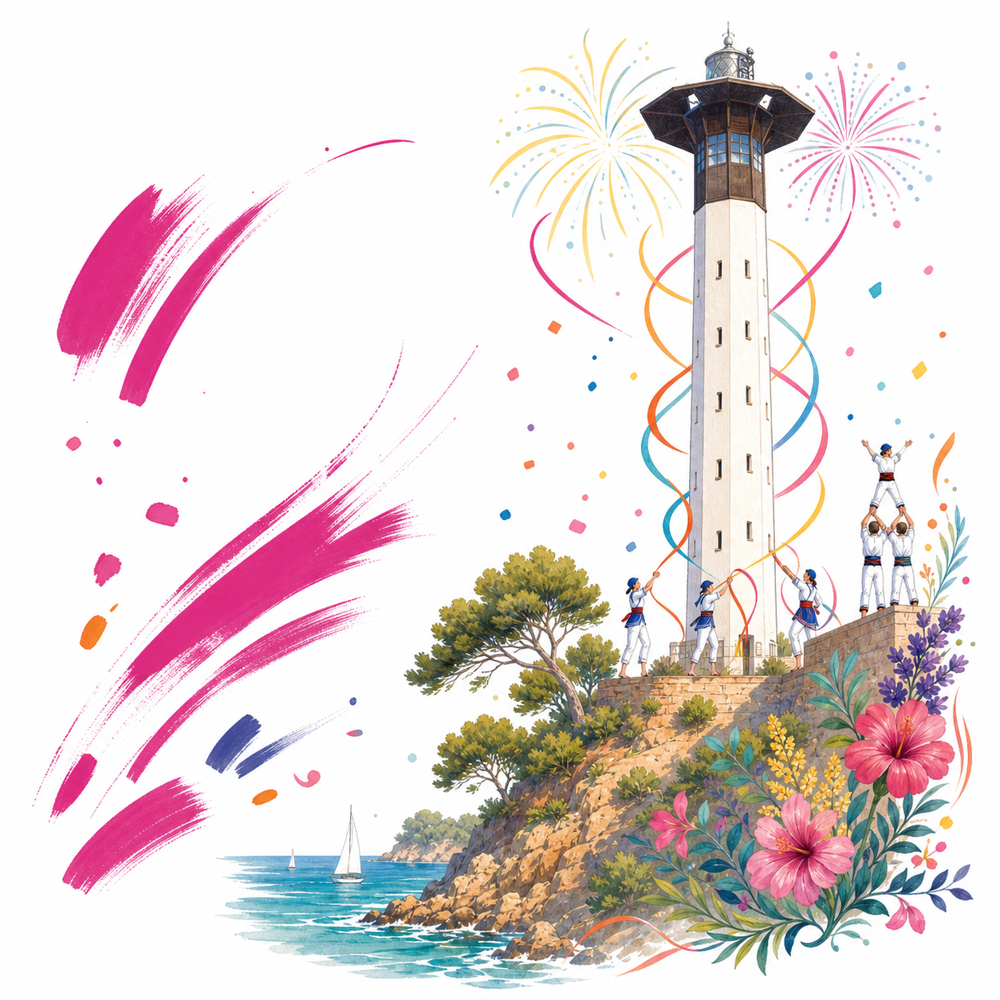

Festa Major, Costa Daurada
Торредембарра
Город с Santa Rosalia, рынком по вторникам, морскими кварталами, дюнами и старым центром.


Город ярче открытки
Маяк важен, но рядом есть старый центр, Baix a Mar, дюны, римская вилла, башни и следы войны.
Магазины, рынок, кофе
Торредембарра не только пляж. За покупками и паузой идите в центр, на Antoni Roig, в Baix a Mar и на рынок по вторникам.
Маршрут по городу
От маяка к старому центру, Baix a Mar, пляжам и Muntanyans: выбирайте точку и двигайтесь дальше.
Праздники идут круглый год
Santa Rosalia и El Quadre только вершина. Есть Sant Joan, Carnaval, Sant Sebastià, Nadal, Reis и местный seguici.
Слои, которые видно пешком
Римская вилла, средневековая Torre de la Vila, ренессансный замок, школы Roig, бункеры и маяк XXI века.
Что сейчас происходит
Ближайшие события, городские новости и Viu La Torre в одном месте.
Полезные ссылки
Официальные страницы города, туризм, афиша, новости и приложение Viu La Torre.